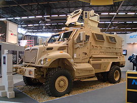

.png)
Promaxx
63% убитих і 69% поранених в Іраку в 2003-2007 роках військовослужбовців США припадають на втрати від саморобних вибухових пристроїв [2] . У 2006 році Пентагон запустив термінову програму будівництва броньованих автомобілів, захищених від мін та стрілецького вогню із засідок ( англ. Mine Resistant Ambush Protected, MRAP ). Програму MRAP жорстко критикують за неорганізованість та розпилення коштів: після термінового конкурсу та випробувань у березні-червні 2007 року замовлення на тисячі машин різних зразків були видані одразу п'яти компаніям – Force Protection Inc , BAE Systems , Stewart & Stevenson , General Dynamics та Navistar.. Фактично, Пентагон мобілізував виконання термінового замовлення всіх готівкових постачальників. При цьому запланована доставка броньовика повітрям із США до Іраку коштує 750 000 доларів [3] - дорожче, ніж сам MaxxPro (548 000 доларів [4] ). На кінець грудня 2007 на частку Navistar дісталися контракти на поставку 4471 машини на суму 2,7 млрд доларів, або 40% від програми в цілому [5] . Основний замовник MaxxPro та розпорядник програми MRAP – Корпус морської піхоти США . Джерела в Багдаді повідомляють про потенційне розширення контракту до 7000 машин [6] .
.jpg)
.jpg)
Promaxx
 На озброєні Армії СШАВійни і конфлікти: Війна в іраку російсько Українська війна (2022) Конструктор Navistar International/Plasan
Розроблений: 2007
Виробник Navistar International
Роки виробництва 2007
Всого випущено: 9000